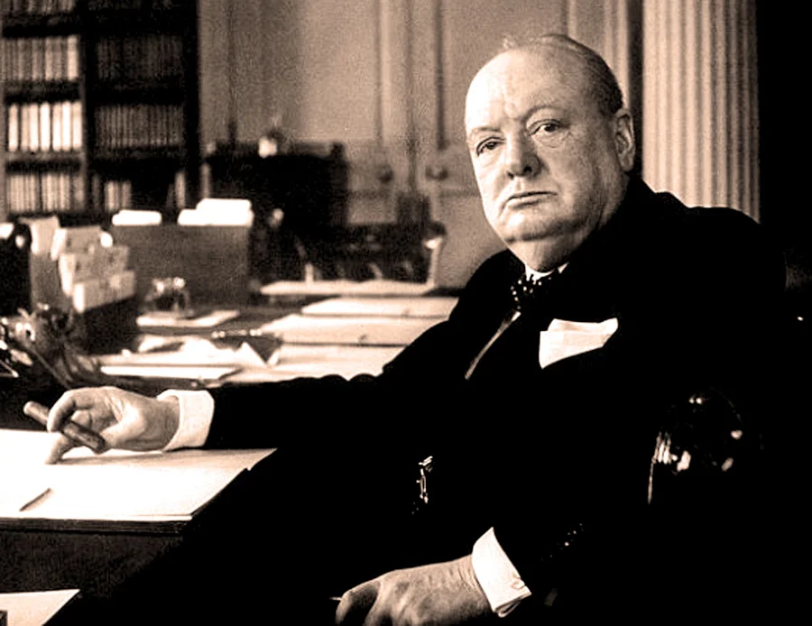

Para pensar · Democracia
A democracia é falha, mas ainda é a melhor?
Em 1947, o político britânico Winston Churchill resumiu em uma frase a ideia de que a democracia tem defeitos, mas continua sendo preferível às alternativas.
“Ninguém finge que a democracia seja perfeita ou infalível. Na verdade, já se disse que a democracia é a pior forma de governo, à exceção de todas as outras que já foram experimentadas ao longo do tempo.”Winston Churchill, discurso na Câmara dos Comuns, 11 de novembro de 1947 (tradução livre)
Como entender a frase
O contexto histórico
A frase foi dita em novembro de 1947, dois anos depois do fim da Segunda Guerra Mundial. A guerra havia sido travada contra regimes totalitários, como o nazismo, e o mundo começava a se dividir na Guerra Fria, com os Estados Unidos e a União Soviética em disputa, em um ano marcado pela Doutrina Truman e pelo Plano Marshall.
Churchill havia sido primeiro-ministro durante a guerra, mas perdeu as eleições de 1945 para o Partido Trabalhista. Em 1947, ele era o líder da oposição na Câmara dos Comuns, e foi nesse papel que discursou, em um debate sobre o Parliament Bill, projeto que reduzia o poder da Câmara dos Lordes de adiar leis aprovadas pelos Comuns.
Ou seja, a frase nasceu de um político que aceitou a derrota nas urnas e continuou a defender o regime em que podia criticar o governo. Esse é o sentido da frase: a democracia tem defeitos, mas é nela que o poder muda de mãos pelo voto e que a oposição tem direito de falar.
Bibliografia
CHURCHILL, Winston. Parliament Bill. Hansard, House of Commons Debates, Londres, vol. 444, 11 nov. 1947. Disponível em: https://api.parliament.uk/historic-hansard/commons/1947/nov/11/parliament-bill. Acesso em: 30 out. 2026.